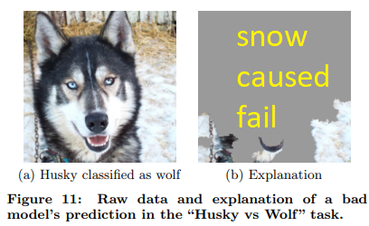
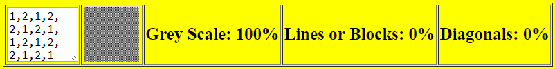

Shedding a small beam of light into the Neural Network Black Box.
Hopefully Machine Learning Libraries will provide more interpretability tools and
Machine Learning Developers will incorporate more interpretability within their model design.
I saw this
article and I was intrigued, but would have difficulties building something that advanced.

So I built something more at my level.

From this very quick test it looks like, all libraries would need is:
- Various abilities to parse the input data: interpret.input.parse()
I have done a very simple random parse injecting
transparent pixels into the data. I am sure other people could come up with more complex ways to parse the input data.
Perhaps use mobinet to exclude non-identified objects or take turns removing obects, etc.
- The predict feature (which is already available): model.predict()
- A method to store, sort and show the interpretations: interpret.add(), interpret.sort(), interpret.show()
Note: I have not used those method names I have simply got the example working.
This demo is loosely based on:
LIME,
but I have built it into the model
This is a minimalist setup of a grey shade detector but using only black and white pixels.
Using a 4x4 input array of pixels with 0=transparent, 1=black, 2=white;
Note: this makes a very small screen pattern. I have presented it repeated 256 times to make a much larger image.
Output is a 1x3 one hot array in this order: grey scale, blocks or lines, diagonal lines
Note: For interpretability I will not train the NN on the transparent feature "0"
To run an interpretability test, I will run the prediction multiple times with inserted transparent blocks, then show and
sort the test results.
Test or change this 4x4 pixel data array: 0 = transparent, 1 = black. 2=white
Following image has the pattern repeated 16x16 = 256 times to show the larger block or the shade
Note: you must load a model before any of the buttons will work!
...
The above example uses a premade 3000 epoch model.
Your job is to make a better model, look at the code in the black textarea, change it and improve the model.
You can also change the input data to create a better model. When done either use local storage or saving the model
and then loading it on the internet. The main interpretability buttons once the model is loaded are still above.
I was thinking of making this really easy to edit, but anyone who has looked at the previous 50 ish examples
should be able to edit this file directly in the black textarea and then local save the file.
...